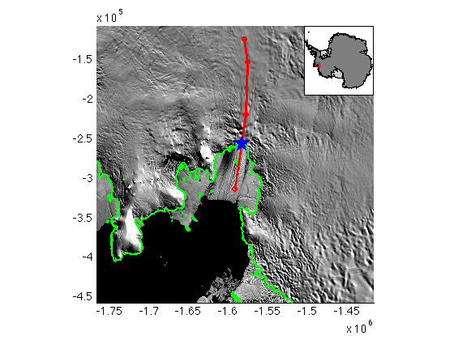

pathcrossingps71
pathcrossingsps71 is part of Antarctic Mapping Tools for Matlab (Greene et al., 2017). Click here for a complete list of functions in AMT.
pathcrossingsps71 returns crossing point(s) of two paths in or around Antarctica. Calculation is performed by converting input lat/lon arrays to polarstereo (-71) x,y coordinates, finding intersections, and then converting intersection point(s) back to georeferenced coordinates.
Before using this function, check to see whether crossovers might better suit your needs. They do similar things, but crossovers finds all self intersections of within a single dataset, wherease pathcrossingsps71 finds the intersection point(s) of two distinct datasets.
Contents
Syntax
[lati,loni] = pathcrossingps71(lat1,lon1,lat2,lon2) [lati,loni] = pathcrossingps71(lat1,lon1,lat2,lon2,ClipOption)
Description
[lati,loni] = pathcrossingps71(lat1,lon1,lat2,lon2) returns lat/lon pair(s) for intersection of paths given by lat1,lon1 and lat2,lon2.
[lati,loni] = pathcrossingps71(lat1,lon1,lat2,lon2,ClipOption) allows turning off of automatic data clipping for large data sets. Use the string 'noclip' to turn off clipping. Clipping is on by default because calculating the intersection(s) of a million-point flight line with another multi-million point flight line would be very slow.
Example: Intersection of snowmobile track with grounding line
Here we'll grab (very approximate) grounding line data from Mouginot et al and see where it intersects a snowmobile track given by four waypoints:
[glat,glon] = antbounds_data('gl');
tracklat = [-75.4491 -75.4657 -75.3771 -75.1145];
tracklon = [-94.4371 -95.4879 -97.8617 -101.0862];
For context, let's plot these data:
% Initialize a 350 km map centererd on PIG: mapzoomps('pine island glacier','mapwidth',350,'inset','northeast') % Plot a MOA image: modismoaps % Plot Mouginot's grounding line: antbounds('gl','color','green','linewidth',2) % Plot the track: plotps(tracklat,tracklon,'ro-','linewidth',2)
Now find the intersection and plot it as a big blue star:
[intersectlat,intersectlon] = pathcrossingps71(glat,glon,tracklat,tracklon); plotps(intersectlat,intersectlon,'bp','markersize',20,'markerfacecolor','blue')
Citing AMT
If this function or any other part of Antarctic Mapping Tools is useful for you, please cite the paper that describes AMT.
Greene, C. A., Gwyther, D. E., & Blankenship, D. D. Antarctic Mapping Tools for Matlab. Computers & Geosciences. 104 (2017) pp.151-157. doi:10.1016/j.cageo.2016.08.003.
Author Info
Chad A. Greene of the University of Texas at Austin's Intitute for Geophysics (UTIG). August 2014. This function includes the InterX by NS.